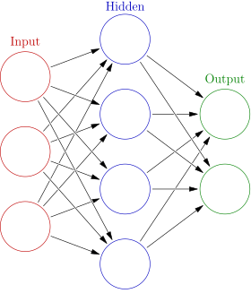

Work Experience
During my time in the engineering program, I have met a number
of industry professionals through workplace field trips and guest
speakers which has broadened my perspective on Engineering. The
field trips helped my identify possible workplaces/colleges that I
can attend in the future. The workplaces showed me the many careers
that are available within Engineering, including QA analyst,
environmental engineer, marine engineer, e.t.c. Guest speakers
helped me realize what people do on a daily basis when
working in the field.
SCU & SJSU Tour - Jason Tosinski
Santa Clara and San Jose State University
2019 December
In 10th grade, I went on a campus tour to both San Jose State and
Santa Clara University. Since I am a high schooler, I was
interested in learning about university life and how to get accepted.
The trip provided me with more than just the answers; the tour showed
me how to apply for various majors like Computer Science major
which I can apply for. Santa Clara university also showed me how I can
learn biotech, one of the fastest growing industries, while still
taking regular computer science classes. Overall, the trip helped me
gain more experience on how university students use their classes
and school oppurtunities to help them get a job in the engineering field.

Jason Yosinski
2019 October
In 10th grade,
Jason Yosinski
visited our school to talk to us about Artificial Intelligence and
Machine Learning. This was my first introduction to the topic
so I was very curious to learn about it. I learned how neural netwroks
work and the effect of tweaking the nodes to perfect the program.
Learning from an actual software developer has helped me understand
the knowledge and the skills needed to become one. Not only developers
need basic programming fundamentals, they also need problem solving skills
and a creative mind to get a job.

Santa Clara and San Jose State University
2019 December
In 10th grade, I went on a campus tour to both San Jose State and Santa Clara University. Since I am a high schooler, I was interested in learning about university life and how to get accepted. The trip provided me with more than just the answers; the tour showed me how to apply for various majors like Computer Science major which I can apply for. Santa Clara university also showed me how I can learn biotech, one of the fastest growing industries, while still taking regular computer science classes. Overall, the trip helped me gain more experience on how university students use their classes and school oppurtunities to help them get a job in the engineering field.
Jason Yosinski
2019 October
In 10th grade, Jason Yosinski visited our school to talk to us about Artificial Intelligence and Machine Learning. This was my first introduction to the topic so I was very curious to learn about it. I learned how neural netwroks work and the effect of tweaking the nodes to perfect the program. Learning from an actual software developer has helped me understand the knowledge and the skills needed to become one. Not only developers need basic programming fundamentals, they also need problem solving skills and a creative mind to get a job.